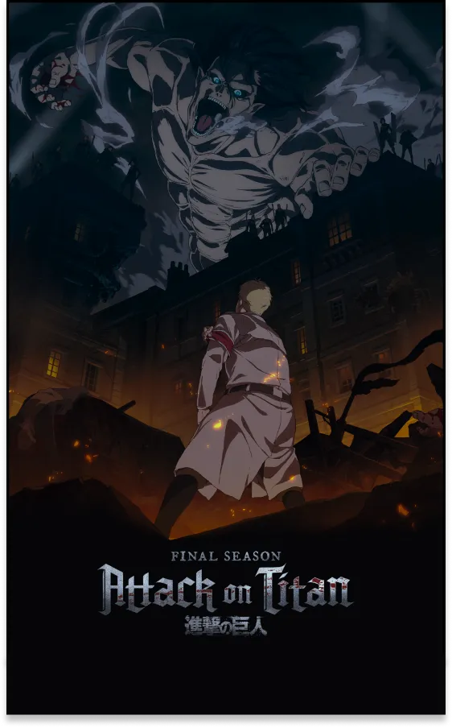

Guren no yumiya
Une musique à la hauteur de son oeuvre...
Shingeki No Kyojin, L’attaque des titans.
Le nom de l’anime c’est Shingeki No Kiojin.
On parle de Guren no Yumiya, une musique représentative de l’histoire L’attaque des titans
Cet anime sorti en 2013, il est composé de quatre saisons.
Cela raconte l’histoire d’un monde affecté par une guerre qui dure depuis des siècles.
Le premier, le mur le plus proche de l’extérieur.
Le mur Maria, ensuite le mur Rose et pour finir le mur Sina qui le plus proche des humains.
Trois murs de Paradis
Un générique aussi marquant que son oeuvre.
Guren no yumiya signifie “L'arc et la flèche écarlate”. Il utilise le terme écarlate pour rendre l’expression plus belle et moins violente.
L'expression est en sorte atténuer, cela signifie donc “L'arc et la flèche ensanglanté".
L’instrumental de la musique est basé sur des notes graves et des notes assez rapides.
Cet instrumental fait ressentir de la violence. Les paroles racontent les sentiments de revanches et de rages qu’éprouvent les humains au vu de leur situation injuste et interminable.
Affiche promotionnel de la derniere
saison de Shingeki No Kyojin
L’histoire de Guren no yumiya.
Un groupe de musique japonais créé par l'auteur et compositeur Revo en 2012.
Il est composé de 13 membres dont 7 chanteurs, 5 musiciens et 2 compositeurs.
C’est un groupe de pop & rock japonais.
Il a composé et interprété trois des cinq musiques d'ouvertures de la série d'animation japonaise “Shingeki No Kyojin “en français “L’Attaque des Titans”.
Guren no Yumiya est sorti le 10 juillet 2013 dans l’album Jiyuu e no Shingeki dédiée à l’animer l’attaque des titans.
C’est un album avec des musiques du genre métal symphonique.
Les paroles sont chantées en Japonais et en Allemand.
Sur l’application auditive Spotify, la musique qui dure 5 minutes et 10 secondes comptabilise plus de 120 millions d'écoutes. Ainsi que 40 millions de vues sur la vidéo Youtube de la musique Guren no yumiya avec le générique d’ouverture.

Découvrir :
Guren No
Yumiya